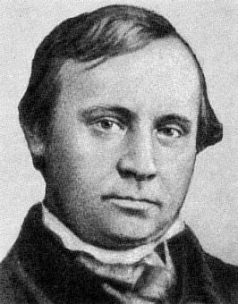
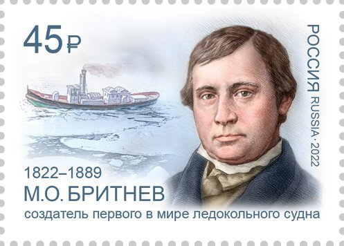

Корабль, который полез на лёд
Читается подряд. Нажми на удар — откроется подробный разбор с источниками.
Кронштадт стоит на острове посреди Финского залива: пока лёд не сойдёт, пароход к нему не подойдёт.Узнать подробнееСвернуть
Остров Котлин с Кронштадтом отделён от южного берега, где стоит Ораниенбаум, полосой воды в несколько вёрст. Когда залив замерзал, пароходы вставали до весны. Бритнев потом и мерил успех этим: в апреле 1865 года навигация благодаря «Пайлоту» открылась раньше обычного.
Источник: Президентская библиотека имени Б. Н. Ельцина, «Михаил Осипович Бритнев (1822–1889)».
Михаил Бритнев родился в 1822 году в Кронштадте, в купеческой семье. Отца он потерял в двенадцать лет.Узнать подробнееСвернуть

М. О. Бритнев. Портрет XIX века, автор неизвестен. Общественное достояние. Бритнев родом из купеческой семьи потомственного почётного гражданина Кронштадта. Отец умер, когда сыну было двенадцать лет.
Учился в уездном четырёхклассном училище, потом в коммерческом училище в Петербурге.
Источник: Президентская библиотека имени Б. Н. Ельцина.
Купеческий сын поехал в Англию учиться корабельной архитектуре — и вернулся в Кронштадт судовым хозяином.Узнать подробнееСвернуть
В Англии Бритнев изучал корабельную архитектуру. Дома он занялся ремонтом судов и спасательными работами, держал паровые плавучие краны для разгрузки кораблей.
Источники: Президентская библиотека; О. Обыденская, «Очень деловой человек. Кто придумал ледокол», «Сноб», 03.10.2023.
В 1862 году он заказал в Англии небольшой буксир «Пайлот»: 26 метров длины, машина в 85 лошадиных сил.Узнать подробнееСвернуть
«Пайлот» построили в Англии по заказу Бритнева в 1862 году. Длина — 26 метров, осадка — до 2,5 метра, мощность машины — 85 лошадиных сил. Обычный небольшой буксир.
Источник: Президентская библиотека имени Б. Н. Ельцина.
Бритнев велел срезать нос «Пайлота» ниже ватерлинии под углом 20 градусов к килю.Узнать подробнееСвернуть
Находка дняФорштевень — передняя кромка корпуса. У обычного судна он почти отвесный. Бритнев заострил его ниже ватерлинии и скосил под углом 20 градусов. Судно перестало упираться в кромку льда: скошенный нос подныривал под неё.
Попробуй сам в модели ниже: прямой нос против скошенного.
Источники: ОСК и Почта России о марке 2022 года (korabel.ru); Президентская библиотека.
Корабль больше не бил лёд, а вползал на него и ломал собственным весом.Узнать подробнееСвернуть
Так объясняют сами кораблестроители: скошенный нос позволил судну «вползать на лёд и ломать его своим весом». Удар в лоб тратит силу машины и калечит корпус. Вес давит сверху на тонкую плиту, и лёд проламывается.
Источник: пресс-релиз ОСК к выпуску марки, korabel.ru, 2022.
22 апреля 1864 года переделанный «Пайлот» пошёл первым рейсом из Кронштадта к Ораниенбауму.Узнать подробнееСвернуть
С этого рейса «Деловой Петербург» и «Сноб» ведут отсчёт ледокольного флота.
Источники: И. Хлебов, «"Пайлот" Первый», «Деловой Петербург», 21.04.2019; «Сноб», 03.10.2023.
Льды он не отменил, но растянул навигацию: весной 1865-го пароходы пошли раньше обычного.Узнать подробнееСвернуть
Маленький «Пайлот» не пробивал зимний лёд в середине залива. Его сила — в начале и конце сезона, когда кромка тоньше: несколько лишних недель навигации для купеческой линии означали деньги. «Сноб» пишет, что «Пайлот» ходил между Кронштадтом и Петербургом до конца века.
Источники: Президентская библиотека (апрель 1865 года); «Сноб», 2023.
Зимой 1871 года замёрзла Эльба — и немцы приехали в Кронштадт за чертежами. Бритнев продал их за 300 рублей.Узнать подробнееСвернуть
Суровая зима заперла Гамбургский порт. Немецкие инженеры купили у Бритнева чертежи «Пайлота», заплатив, как пишет «Деловой Петербург», «не щедрые 300 рублей».
Источники: Президентская библиотека; «Деловой Петербург», 2019; «Сноб», 2023.
По русским чертежам в Гамбурге построили первые немецкие ледоколы.Узнать подробнееСвернуть
Президентская библиотека называет их «Айсбрехер-1» и «Айсбрехер-2». «Деловой Петербург» даёт немецкому ледоколу другое имя — «Айсфукс», «Ледяной лис». Какой из кораблей пошёл первым, мы по русским источникам не установили и оставляем оба свидетельства.
Источники: Президентская библиотека; «Деловой Петербург», 2019.
Сам Бритнев строил дальше: «Бой» в 1875 году, «Буй» в 1889-м — оба ледокольные.Узнать подробнееСвернуть
В 1869–1873 годах был городским головой Кронштадта, основал водолазную школу, сиротский дом и женскую гимназию.
Источники: Президентская библиотека; «Сноб», 2023.
Форму его носа назвали «ледокольной». В 2022 году Почта России выпустила марку к двухсотлетию Бритнева.Узнать подробнееСвернуть

Марка Почты России, 28 июля 2022 года, серия «Русские кораблестроители». Художник М. Подобед. Марки не охраняются авторским правом. По словам ОСК, форма носа «впоследствии стала именоваться „ледокольной“», а проект Бритнева «стал прообразом нового типа судов — ледоколов». Бритнев умер в 1889 году. Через десять лет в Россию пришёл «Ермак» — первый арктический ледокол (о нём — 8 января).
Источники: korabel.ru, 2022 (тираж марки — 120 тысяч); Президентская библиотека.